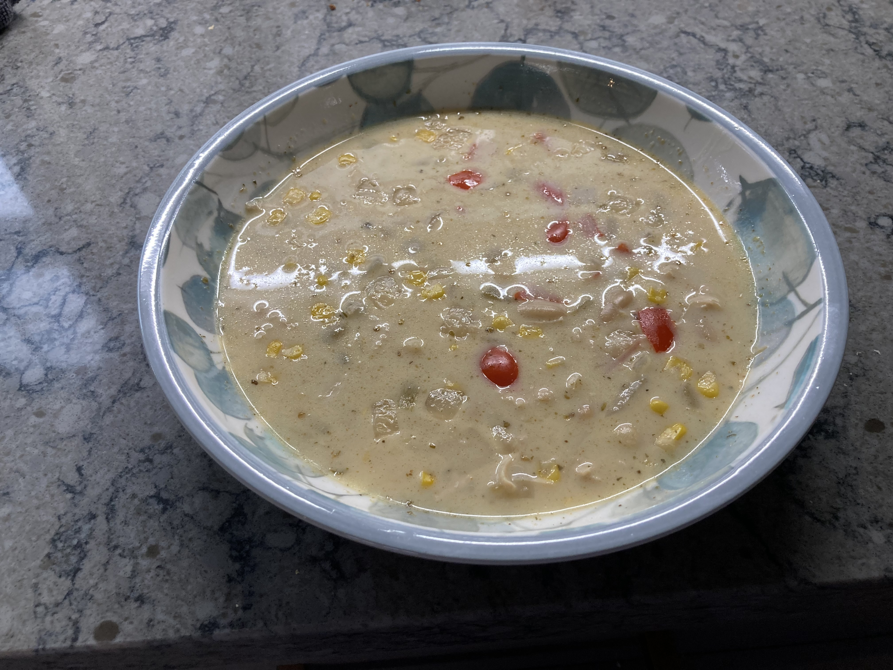

White Chicken Chili

Ingredients
- 2 T. Olive Oil
- 1 minced Onion
- 2 cloves Garlic
- 3 1/2 C. Chicken Stock
- 1 can Green Chilies
- 1 1/2 t. Cumin
- 1/2 t. Paprika
- 1/2 t. Oregano
- 1/2 t. Coriander
- 1/4 t. Cayenne
- 1 pack Cream Cheese
- 1 can Corn
- 2 cans Cannellini Beans
- 2 1/2 C. Chicken
- 1 T. Lime Juice
- 2 T. Cilantro
Directions
- Saute the onions in the olive oil until translucent. Add garlic & cook an additional minute. Remove from heat.
- Add remaining ingredients & place back on low heat to simmer the soup. Stirring occasionally until cream cheese is melted full.
- Let sit 5 minutes & serve.